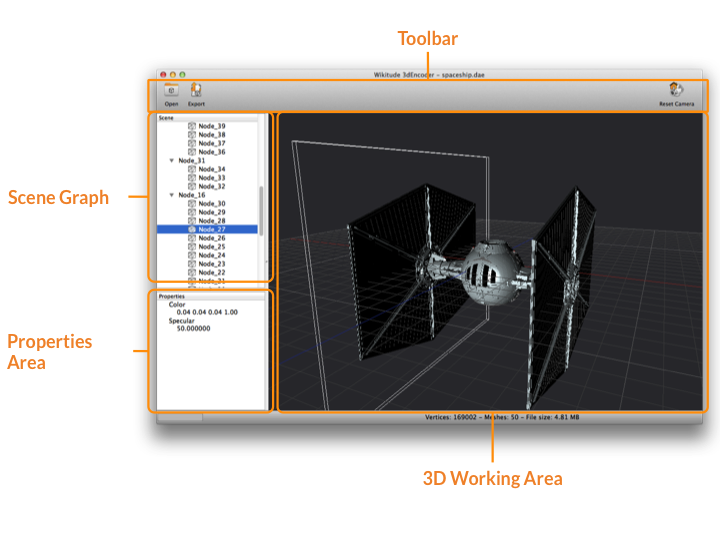
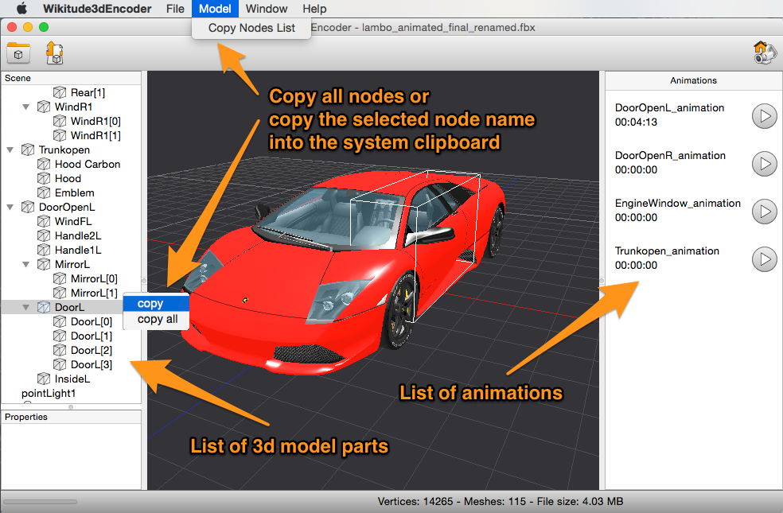

Wikitude 3D Encoder
3D content within Wikitude can only be loaded from so-called Wikitude 3D Format files (.wt3). This is a compressed binary format for describing 3D content, which is optimized for fast loading and handling of 3D content on a mobile devices. You still can use 3D models from your favorite 3D modeling tools (such as Autodesk® Maya® or Blender) but you'll need to convert them to the wt3 file format. Wikitude offers a desktop application called the Wikitude 3D Encoder, which handles the task of encoding your 3D source file. The Wikitude Encoder currently supports Autodesk® FBX® files (.fbx) for encoding to .wt3.
The Wikitude 3D Encoder converts 3D models into an internal representation, so-called wt3 files, which can then be rendered by the Wikitude SDK. The converter supports mesh-based 3D models which can be animated, textured and lit by light sources.
Each step for getting a .wt3 file from your 3D content is explained in more detail below.
- How to install the Wikitude 3D Encoder
- Supported 3D Models
- The Wikitude 3D Encoder user interface
- First Steps Using the Wikitude 3D Encoder
- Working with 3D Models
How to install Wikitude 3D Encoder on Windows XP/ Windows 7/ Windows 8
- Download the Encoder from www.wikitude.com/download
- Run the setup.exe installation file and follow the installation wizard
How to install Wikitude 3D Encoder on Mac OS X
- Download the Encoder from www.wikitude.com/download
- Open the .dmg installation image and drag the Wikitude 3D Encoder application to your Applications folder.
Supported 3D Models (Input Files)
The Wikitude 3D Encoder can import Autodesk® FBX® up to version 2015. Though the FBX format is not a well defined standard it is supported by most 3D modeling tools, like Autodesk Maya or 3D Studio Max, and thereby represents a common 3D file format. Since different modeling tools use different representations of the 3D models we recommend to verify the models in the free tool "FBX Reviewer” by Autodesk (Download).
Features you can use in your 3D model source files:
- Static model (made-up of triangles)
- Animations
- Transformation Animations
- Skinning
- Materials
- Phong, Lambert, Blinn
- Transparency
- NURBS (will be tessellated on import)
Features that are not (yet) supported
- Normal Mapping
- Multi Textures
If you are not sure whether the 3D model at hand fits the requirements, try to encode it. You will receive a list of warnings and errors that tell you if the 3D content will work within Wikitude or uses unsupported features.
The Wikitude 3D Encoder user interface
On startup you are presented with the following interface.
- Toolbar for frequently used functions
- 3D working area to view your 3D content.
- Scene graph that lists all 3D content in a tree view
- A properties area that shows details about a selected node from the scene graph
- Status bar

First steps using the Wikitude 3D Encoder
Start by opening a supported 3D model file (.fbx, .dae). Select Open from the toolbar or drag and drop a supported file onto the 3D working area. Depending on the size of the file this can take a while. Once finished, the 3D content will be shown in the 3D working area.
In case the Wikitude 3D Encoder encounters features not supported in your file, it will present a list of errors or warnings in a dialog box. The popup window summarizes the issues found during the import process. You can bring up this information again at a later time via Window->Show Logging Window. Check the message and details carefully to identify areas that need to be altered in your 3D model file, ensuring that it can be encoded properly.
The 3D working area shows your encoded 3D model file in the exact way as it would show in Wikitude. Drag, pan and zoom to verify that your model looks ok. If you need to check specific properties (e.g. materials or lights) select the corresponding node in the scene graph. The details of a selected node are displayed in the properties view.
Export files to .wt3
Once you are satisfied with the encoded file, choose Export from the toolbar. Then choose the location where the exported file should be saved. Exported .wt3 files can be used directly in an augmented reality experience using Wikitude. If you want to view a .wt3 file on the desktop, simply choose Open or drag and drop it into the Wikitude 3D Encoder.
More information on the workflow with 3D content can be found in the dedicated chapter called 3D Asset Workflow.
Scene Graph and Animations
The scene graph contains all mesh parts of the 3d model grouped into a hierarchy. The leafs of the scene graph represent different parts of the 3D model. Selecting nodes in the scene graph displays a bounding box indicating where the part is located in the 3d model (see white frame box in the figure below).
A list of all model parts can be obtained via the application menu or by selecting node and copying its name, either via the context menu or by key combination Command+c/Control+c (see figure below).
If a 3D model contains animations, these are listed on the right-hand side of the window. Each animation can be started by the round play button (see figure below).
For a discussion on how to use model parts and animations in the Wikitude SDK see 3D Models
